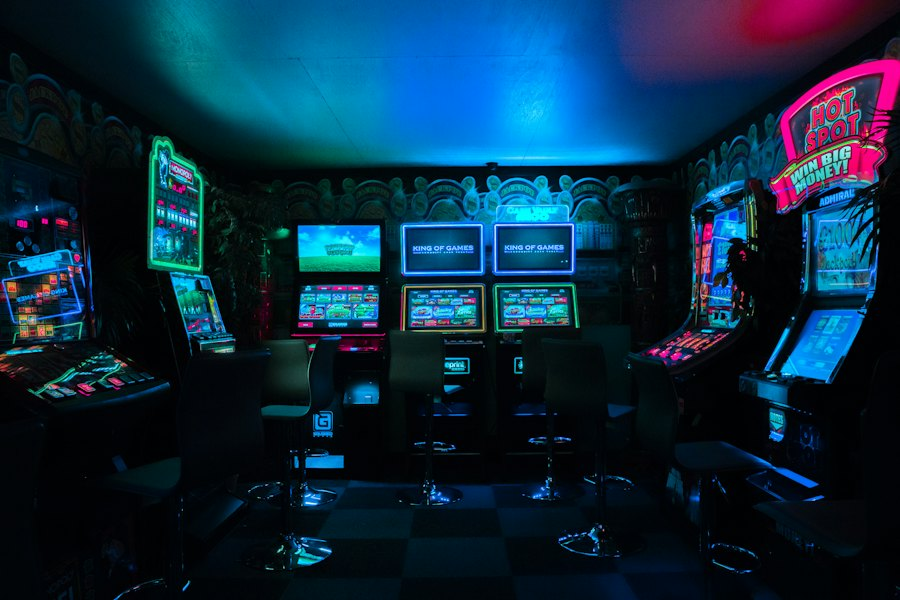

Платформы
Игровые платформы
Разные платформы предлагают свой набор устройств, интерфейсов, магазинов и эксклюзивов.
| Платформа | Особенности | Тип управления | Примеры |
|---|---|---|---|
| PC | Настройка графики, широкий каталог, модификации | Клавиатура + мышь / контроллер | Cyberpunk 2077, Minecraft |
| PlayStation | Консольный формат, эксклюзивные серии, удобный интерфейс | Контроллер | The Witcher 3, Elden Ring |
| Xbox | Консольная экосистема и подписочные сервисы | Контроллер | Forza Horizon 5 |
| Nintendo Switch | Портативный и стационарный режимы | Joy-Con / Pro Controller | Hades, Minecraft |
| Mobile | Доступность, сенсорное управление, мобильные сессии | Сенсорный экран | Minecraft, Stardew Valley |
Как выбирать платформу
Ориентируйтесь на жанры, любимые серии, формат игры (домашний или портативный), наличие друзей на той же платформе и удобство управления.
Игровой сетап
